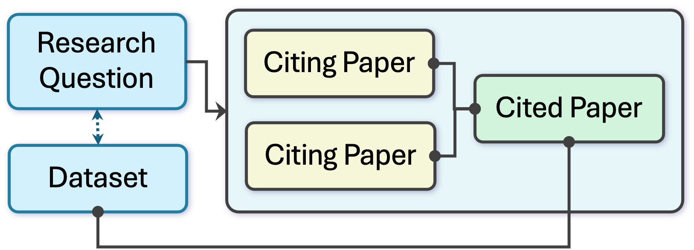
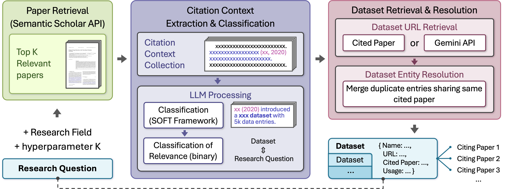

Multi-Disciplinary Dataset Discovery from Citation-Verified Literature Contexts
Author(s): Zhiyin Tan, Changxu Duan
[GitHub] [Paper] [arXiv] [slides]

Pipeline: citation contexts → LLM extraction → entity resolution and ranking.
Overview
Finding suitable datasets for a research question remains difficult because most dataset search engines are metadata-driven (titles, keywords, repository fields). This works when metadata is complete and terminology matches, but often fails for interdisciplinary topics or datasets with sparse/inconsistent metadata.
We propose a literature-driven alternative that treats citation contexts as semantic evidence of dataset usage. Given a query, we (1) retrieve relevant papers from the Semantic Scholar Academic Graph (S2AG) and collect sentence windows around citation markers, (2) apply schema-guided LLM extraction to identify dataset mentions and their roles (e.g., Use/Modify/Evaluate Against), and (3) consolidate mentions via deterministic, provenance-preserving entity resolution to produce a ranked dataset list with evidence and links (URL/PID when available).
On 8 survey-derived computer-science queries, we achieve 47.47% average normalized recall (up to 81.82%), compared to Google Dataset Search (2.70%) and DataCite Commons (0.00%). Expert assessments across five top-level Fields of Science beyond computer science suggest a substantial portion of the additional datasets are high-utility, and some are novel for the chosen topics. Across the CS benchmarks, the system extracts 1,330 unique dataset entities, with 68.52% carrying a DOI/PID signal.

Workflow: query → citation contexts → LLM extraction → entity resolution.
Key contributions include:
- Citation-context mining paradigm that bridges research questions to datasets using usage evidence from scientific papers (not just metadata).
- Scalable context retrieval over S2AG with configurable citation directions (citing/cited) and optional LLM pre-filtering for relevance.
- Schema-guided LLM extraction that returns structured records grounded in text (dataset name, evidence span, usage role, and confidence), enabling downstream validation and analysis.
- Provenance-preserving entity resolution that consolidates name variants deterministically and enriches entities with links (URL/PID) for practical access and auditing.
How to Cite
@inproceedings{tan2025dataset,
title = {Multi-Disciplinary Dataset Discovery from Citation-Verified Literature Contexts},
url = {http://dx.doi.org/10.1109/JCDL67857.2025.00022},
DOI = {10.1109/jcdl67857.2025.00022},
booktitle = {2025 ACM/IEEE Joint Conference on Digital Libraries (JCDL)},
publisher = {IEEE},
author = {Tan, Zhiyin and Duan, Changxu},
year = {2025},
month = Dec,
pages = {109–118}
}